图片仅供参考，展示产品类型。
电动工具
偏心砂光机 Ø 125 mm，约300 W （有线）
带集尘接口的偏心砂光机，适用于木材、腻子、油漆和抹灰面的精细无划痕打磨。
偏心砂光机在装修中可为腻子面、木构件和漆面提供均匀、无划痕的打磨效果。专业用户要求2.5–3 mm的小偏心距、可预设的振动频率、有效的集尘接口、带集尘孔位的魔术贴砂盘，以及低振动的人体工学设计。由于打磨会产生有害健康的细粉尘和木粉尘，配合M级吸尘器使用（TRGS 553木粉尘、TRGS 559矿物粉尘）是标准做法。
技术参数
| 砂盘直径 | 125 mm |
|---|---|
| 额定输入功率 | 约300 W |
| 偏心距 | 2.5–3 mm |
| 振动频率 | 无级预设（约4000–12000次/分） |
| 电压/频率 | 220–240 V / 50 Hz |
| 集尘 | 可接M级吸尘器的集尘接口+集尘盒 |
| 海关编码（HS） | 84672959 |
欧盟标准与法规
2006/42/EG机械指令（自2027年1月20日起由机械法规(EU) 2023/1230取代）EN 62841-1手持式电动工具——通用安全要求EN 62841-2-4砂光机和抛光机（盘式除外）的特殊要求EN 50632-2-4电动工具粉尘测量方法——砂光机和抛光机TRGS 553木粉尘（使用合适的吸尘器，M级）2014/30/EU电磁兼容指令（含EN 55014-1/-2）及RoHS 2011/65/EUGSGS标志——经检验的安全性（ProdSG第20条）
搭配产品


本类别其他产品
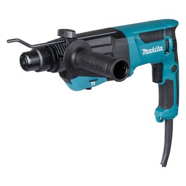
SDS-plus 电锤 26 mm，800 W （有线）配SDS-plus夹头的轻便800瓦电锤，用于混凝土和砌体钻孔、锚栓安装及轻度凿击。
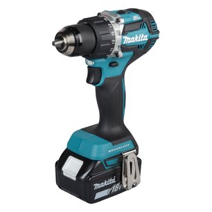
18 V无刷充电式电钻/螺丝刀 （双速）配双速变速箱的18 V无刷充电式电钻/螺丝刀，适用于木材、金属和干式隔墙的钻孔与拧紧——每个工地的日常手持工具。

角磨机 125 mm，1200 W （有线）轻便的125毫米角磨机，适用于安装和装修作业中对钢材与石材的切割、粗磨和去毛刺。
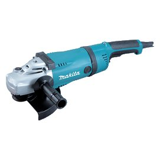
角磨机 230 mm，2400 W （有线）适用于拆除与清拆现场的大功率230毫米角磨机，可切割、粗磨钢材、石材和混凝土。

马刀锯 1200 W （有线）适用于拆除作业的大功率马刀锯：一刀即可锯断木梁、管道、型材和钉子。
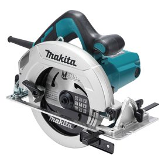
手提圆锯 185 mm，1400 W （有线）轻便的1400瓦手提圆锯，用于拆除、装修和干式施工中的木梁、板材和人造板下料。

长杆墙面砂光机 （墙面/顶面打磨机）750 W，Ø 225 mm长杆砂光机，无需脚手架即可低粉尘打磨墙面和顶面的腻子、抹灰层和石膏板。
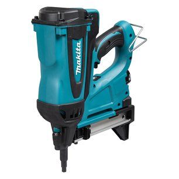
射钉枪 （钉枪），燃气式，电池点火燃气式射钉枪，用于在混凝土和钢材上快速固定支架、桥架和龙骨。
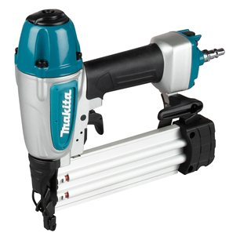
气动射钉枪 15–50 mm （码钉/直钉枪, 6–8 bar）气动射钉枪，适用于模板、木结构、屋面挂瓦条和室内装修——打钉效率高、使用者疲劳小。

M级工地吸尘器，30 L，1200 W （安全吸尘器）带设备插座的M级安全吸尘器（EN 60335-2-69），适用于钻孔、打磨和清拆——可吸附TRGS 559规定的矿物粉尘。

干湿两用吸尘器 30 L，1400 W （工地吸尘器, 不锈钢桶）配不锈钢桶的30升耐用干湿两用吸尘器，用于日常工地清洁——用于拆除粉尘时必须具备经认证的M级或H级。

SDS-plus钻头与凿子套装12件 (硬质合金锤钻头、尖凿/平凿/槽凿,含工具箱)9支SDS-plus锤钻头(5–20毫米)加3支凿子,塑料工具箱装——每台电锤和多功能锤的标准配件。

往复锯条套装20件 (双金属,木材与金属,塑料盒装)20片通用柄双金属往复锯条,适用于木材、带钉木材和金属,塑料盒装——往复锯的易损配件。

无纺布滤袋30升,M级 (5只装,适用于工地吸尘器及干湿两用吸尘器)5只30升无纺布滤袋,带卡环,适用于30升级别的工地吸尘器及干湿两用吸尘器——吸尘器的耗材。
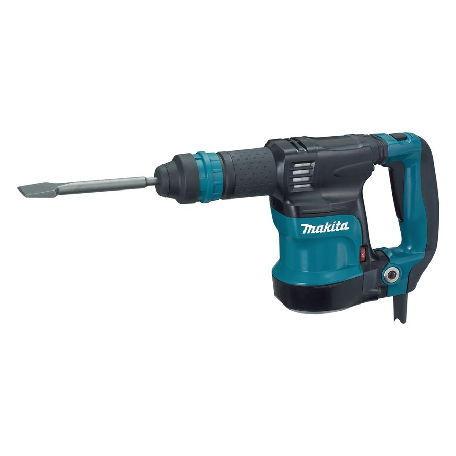
轻型SDS-plus凿锤 (约3公斤)带SDS-plus夹头的轻型市电凿锤,用于瓷砖、抹灰、开槽和轻型拆除——无钻孔功能。

充电式SDS-max凿锤 (36–40伏,约6千克)
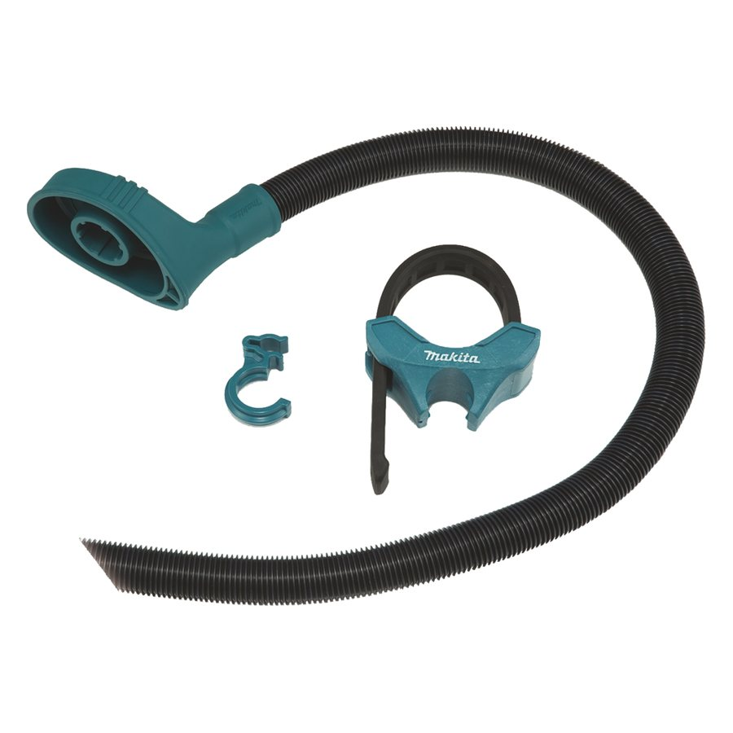
凿击作业吸尘套件
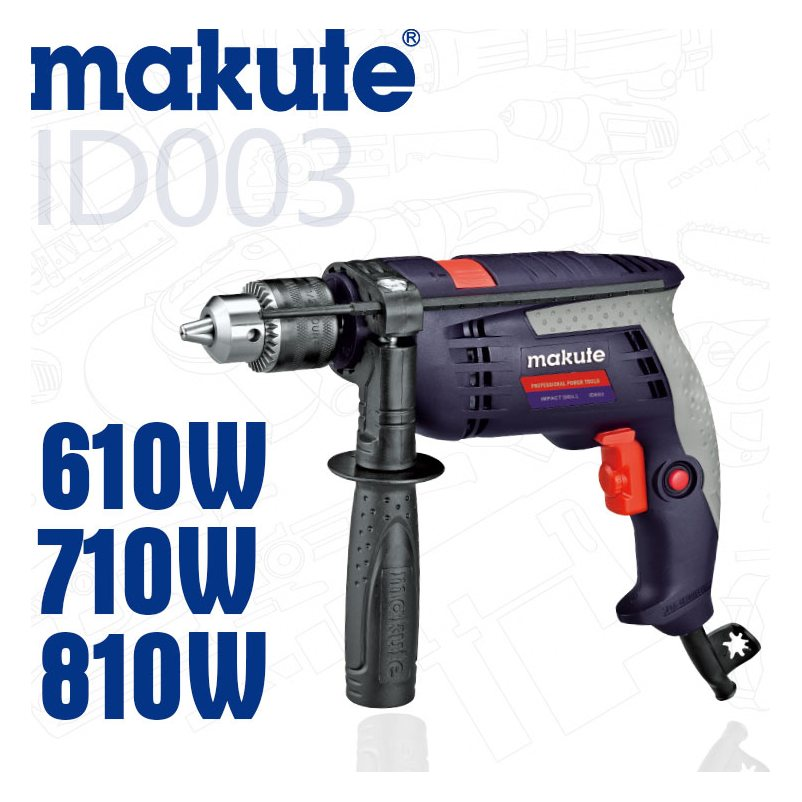
冲击钻 810 瓦 （230 伏），13 毫米夹头，有线有线冲击钻，球式冲击机构，无级调速，正反转。
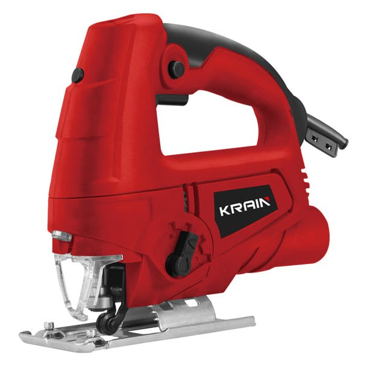
曲线锯 650 W，切割深度65 mm （有线）带摆动行程的曲线锯，适用木材与金属，快换锯条。
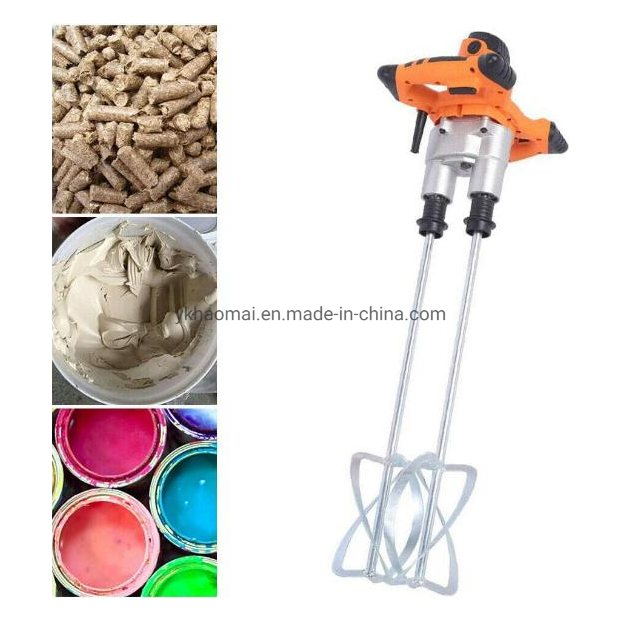
手持搅拌器 1600 W，双桨 （砂浆、涂料、石膏）无级调速搅拌器，用于砂浆、涂料和腻子。
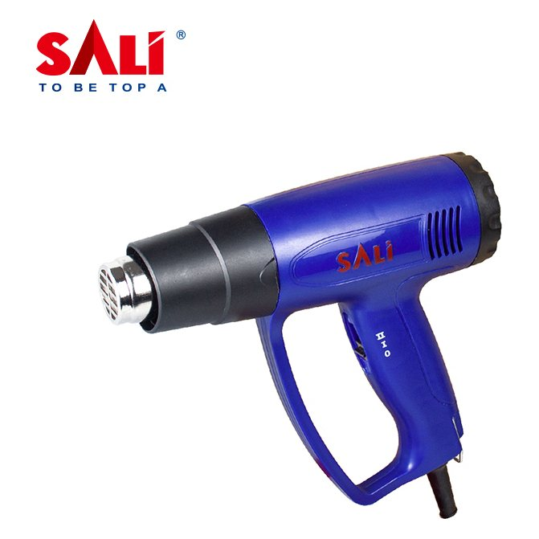
热风枪 2000 W，两档热风枪，用于除漆、热缩管和塑料加工。

无线冲击扳手 1/2" 18 V，无刷无刷冲击扳手，用于轮胎及螺栓作业。

双头砂轮机 150 mm，350 W （台式）台式砂轮机，用于磨刀与去毛刺。
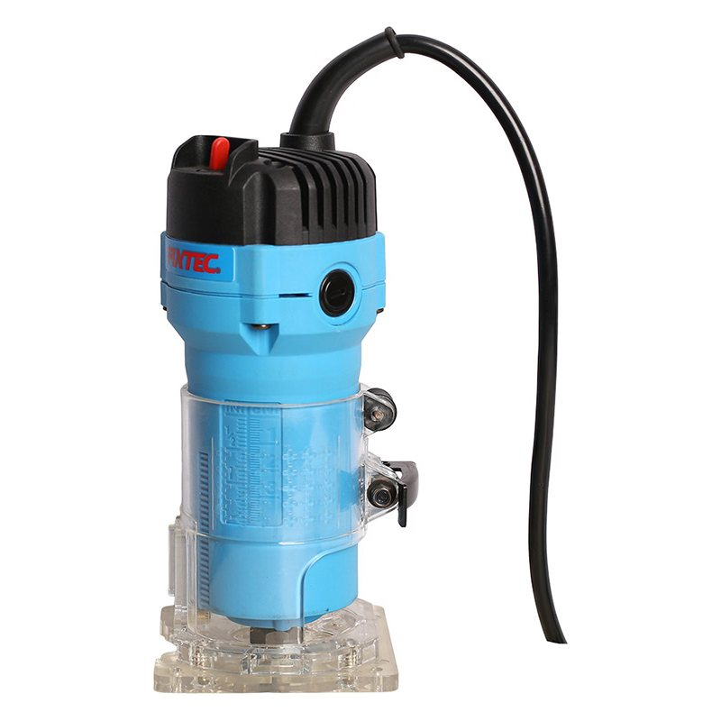
修边机 550 W，6 mm夹头紧凑型修边机，用于层压板和封边。